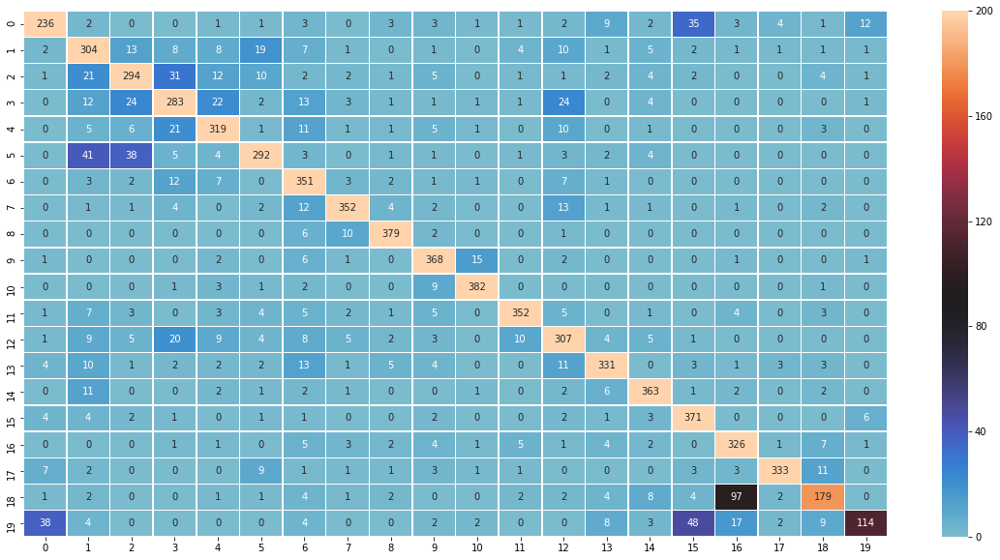

Text Classification¶
A Getting Started Tutorial for Self Learners¶
import spacy
from sklearn.datasets import fetch_20newsgroups # import packages which help us download dataset and load intp python
from sklearn.pipeline import Pipeline
import numpy as np # numpy package is for fast numerical computation in Python
# Load the filenames and data from the 20 newsgroups dataset
# This will download the datasets if you don't have them already
twenty_train = fetch_20newsgroups(subset='train', shuffle=True, download_if_missing=True)
twenty_test = fetch_20newsgroups(subset='test', shuffle=True, download_if_missing=True)
# What is this dataset about?
print(twenty_train.description)
the 20 newsgroups by date dataset
twenty_train.data[0]
"From: lerxst@wam.umd.edu (where's my thing)\nSubject: WHAT car is this!?\nNntp-Posting-Host: rac3.wam.umd.edu\nOrganization: University of Maryland, College Park\nLines: 15\n\n I was wondering if anyone out there could enlighten me on this car I saw\nthe other day. It was a 2-door sports car, looked to be from the late 60s/\nearly 70s. It was called a Bricklin. The doors were really small. In addition,\nthe front bumper was separate from the rest of the body. This is \nall I know. If anyone can tellme a model name, engine specs, years\nof production, where this car is made, history, or whatever info you\nhave on this funky looking car, please e-mail.\n\nThanks,\n- IL\n ---- brought to you by your neighborhood Lerxst ----\n\n\n\n\n"
Let’s look at what are all the classes:
twenty_train.target_names
['alt.atheism',
'comp.graphics',
'comp.os.ms-windows.misc',
'comp.sys.ibm.pc.hardware',
'comp.sys.mac.hardware',
'comp.windows.x',
'misc.forsale',
'rec.autos',
'rec.motorcycles',
'rec.sport.baseball',
'rec.sport.hockey',
'sci.crypt',
'sci.electronics',
'sci.med',
'sci.space',
'soc.religion.christian',
'talk.politics.guns',
'talk.politics.mideast',
'talk.politics.misc',
'talk.religion.misc']
Why do we need to convert text to numbers?¶
# Extracting features from text files
from sklearn.feature_extraction.text import CountVectorizer
count_vect = CountVectorizer()
X_train_counts = count_vect.fit_transform(twenty_train.data)
print(f'Shape of Term Frequency Matrix: {X_train_counts.shape}')
Shape of Term Frequency Matrix: (11314, 130107)
from sklearn.feature_extraction.text import TfidfTransformer
tfidf_transformer = TfidfTransformer()
X_train_tfidf = tfidf_transformer.fit_transform(X_train_counts)
print(f'Shape of TFIDF Matrix: {X_train_tfidf.shape}')
Shape of TFIDF Matrix: (11314, 130107)
# Machine Learning
# Training Naive Bayes (NB) classifier on training data.
from sklearn.naive_bayes import MultinomialNB
clf = MultinomialNB().fit(X_train_tfidf, twenty_train.target)
# Building a pipeline: We can write less code and do all of the above, by building a pipeline as follows:
text_nb_clf = Pipeline([('vect', CountVectorizer()), ('tfidf', TfidfTransformer()), ('clf', MultinomialNB())])
text_nb_clf = text_nb_clf.fit(twenty_train.data, twenty_train.target)
predicted = text_nb_clf.predict(twenty_test.data)
naivebayes_clf_accuracy = np.mean(predicted == twenty_test.target) * 100.
print(f'Test Accuracy is {naivebayes_clf_accuracy} %')
Test Accuracy is 77.38980350504514 %
from sklearn.linear_model import LogisticRegression as LR
%%time
text_lr_clf = Pipeline([('vect', CountVectorizer()), ('tfidf', TfidfTransformer()), ('clf',LR())])
text_lr_clf = text_lr_clf.fit(twenty_train.data, twenty_train.target)
Wall time: 9.78 s
lr_predicted = text_lr_clf.predict(twenty_test.data)
lr_clf_accuracy = np.mean(lr_predicted == twenty_test.target) * 100.
print(f'Test Accuracy is {lr_clf_accuracy}')
Test Accuracy is 82.79341476367499
from sklearn.metrics import confusion_matrix
cf = confusion_matrix(y_true=twenty_test.target, y_pred=lr_predicted)
import json
print(json.dumps(cf.tolist(), indent=2))
[
[
236,
2,
0,
0,
1,
1,
3,
0,
3,
3,
1,
1,
2,
9,
2,
35,
3,
4,
1,
12
],
[
2,
304,
13,
8,
8,
19,
7,
1,
0,
1,
0,
4,
10,
1,
5,
2,
1,
1,
1,
1
],
[
1,
21,
294,
31,
12,
10,
2,
2,
1,
5,
0,
1,
1,
2,
4,
2,
0,
0,
4,
1
],
[
0,
12,
24,
283,
22,
2,
13,
3,
1,
1,
1,
1,
24,
0,
4,
0,
0,
0,
0,
1
],
[
0,
5,
6,
21,
319,
1,
11,
1,
1,
5,
1,
0,
10,
0,
1,
0,
0,
0,
3,
0
],
[
0,
41,
38,
5,
4,
292,
3,
0,
1,
1,
0,
1,
3,
2,
4,
0,
0,
0,
0,
0
],
[
0,
3,
2,
12,
7,
0,
351,
3,
2,
1,
1,
0,
7,
1,
0,
0,
0,
0,
0,
0
],
[
0,
1,
1,
4,
0,
2,
12,
352,
4,
2,
0,
0,
13,
1,
1,
0,
1,
0,
2,
0
],
[
0,
0,
0,
0,
0,
0,
6,
10,
379,
2,
0,
0,
1,
0,
0,
0,
0,
0,
0,
0
],
[
1,
0,
0,
0,
2,
0,
6,
1,
0,
368,
15,
0,
2,
0,
0,
0,
1,
0,
0,
1
],
[
0,
0,
0,
1,
3,
1,
2,
0,
0,
9,
382,
0,
0,
0,
0,
0,
0,
0,
1,
0
],
[
1,
7,
3,
0,
3,
4,
5,
2,
1,
5,
0,
352,
5,
0,
1,
0,
4,
0,
3,
0
],
[
1,
9,
5,
20,
9,
4,
8,
5,
2,
3,
0,
10,
307,
4,
5,
1,
0,
0,
0,
0
],
[
4,
10,
1,
2,
2,
2,
13,
1,
5,
4,
0,
0,
11,
331,
0,
3,
1,
3,
3,
0
],
[
0,
11,
0,
0,
2,
1,
2,
1,
0,
0,
1,
0,
2,
6,
363,
1,
2,
0,
2,
0
],
[
4,
4,
2,
1,
0,
1,
1,
0,
0,
2,
0,
0,
2,
1,
3,
371,
0,
0,
0,
6
],
[
0,
0,
0,
1,
1,
0,
5,
3,
2,
4,
1,
5,
1,
4,
2,
0,
326,
1,
7,
1
],
[
7,
2,
0,
0,
0,
9,
1,
1,
1,
3,
1,
1,
0,
0,
0,
3,
3,
333,
11,
0
],
[
1,
2,
0,
0,
1,
1,
4,
1,
2,
0,
0,
2,
2,
4,
8,
4,
97,
2,
179,
0
],
[
38,
4,
0,
0,
0,
0,
4,
0,
0,
2,
2,
0,
0,
8,
3,
48,
17,
2,
9,
114
]
]
import seaborn as sns
import matplotlib.pyplot as plt
%matplotlib inline
plt.figure(figsize=(20,10))
ax = sns.heatmap(cf, annot=True, fmt="d",linewidths=.5, center = 90, vmax = 200)

Tricks of Trade¶
Removing Stop Words¶
nlp = spacy.load('en')
If there is an error above, try:
Windows:
python -m spacy download enas AdministratorLinux:
sudo python -m spacy download en
Exploring spaCy¶
from spacy.lang.en.stop_words import STOP_WORDS
STOP_WORDS
{'a',
'about',
'above',
'across',
'after',
'afterwards',
'again',
'against',
'all',
'almost',
'alone',
'along',
'already',
'also',
'although',
'always',
'am',
'among',
'amongst',
'amount',
'an',
'and',
'another',
'any',
'anyhow',
'anyone',
'anything',
'anyway',
'anywhere',
'are',
'around',
'as',
'at',
'back',
'be',
'became',
'because',
'become',
'becomes',
'becoming',
'been',
'before',
'beforehand',
'behind',
'being',
'below',
'beside',
'besides',
'between',
'beyond',
'both',
'bottom',
'but',
'by',
'ca',
'call',
'can',
'cannot',
'could',
'did',
'do',
'does',
'doing',
'done',
'down',
'due',
'during',
'each',
'eight',
'either',
'eleven',
'else',
'elsewhere',
'empty',
'enough',
'even',
'ever',
'every',
'everyone',
'everything',
'everywhere',
'except',
'few',
'fifteen',
'fifty',
'first',
'five',
'for',
'former',
'formerly',
'forty',
'four',
'from',
'front',
'full',
'further',
'get',
'give',
'go',
'had',
'has',
'have',
'he',
'hence',
'her',
'here',
'hereafter',
'hereby',
'herein',
'hereupon',
'hers',
'herself',
'him',
'himself',
'his',
'how',
'however',
'hundred',
'i',
'if',
'in',
'indeed',
'into',
'is',
'it',
'its',
'itself',
'just',
'keep',
'last',
'latter',
'latterly',
'least',
'less',
'made',
'make',
'many',
'may',
'me',
'meanwhile',
'might',
'mine',
'more',
'moreover',
'most',
'mostly',
'move',
'much',
'must',
'my',
'myself',
'name',
'namely',
'neither',
'never',
'nevertheless',
'next',
'nine',
'no',
'nobody',
'none',
'noone',
'nor',
'not',
'nothing',
'now',
'nowhere',
'of',
'off',
'often',
'on',
'once',
'one',
'only',
'onto',
'or',
'other',
'others',
'otherwise',
'our',
'ours',
'ourselves',
'out',
'over',
'own',
'part',
'per',
'perhaps',
'please',
'put',
'quite',
'rather',
're',
'really',
'regarding',
'same',
'say',
'see',
'seem',
'seemed',
'seeming',
'seems',
'serious',
'several',
'she',
'should',
'show',
'side',
'since',
'six',
'sixty',
'so',
'some',
'somehow',
'someone',
'something',
'sometime',
'sometimes',
'somewhere',
'still',
'such',
'take',
'ten',
'than',
'that',
'the',
'their',
'them',
'themselves',
'then',
'thence',
'there',
'thereafter',
'thereby',
'therefore',
'therein',
'thereupon',
'these',
'they',
'third',
'this',
'those',
'though',
'three',
'through',
'throughout',
'thru',
'thus',
'to',
'together',
'too',
'top',
'toward',
'towards',
'twelve',
'twenty',
'two',
'under',
'unless',
'until',
'up',
'upon',
'us',
'used',
'using',
'various',
'very',
'via',
'was',
'we',
'well',
'were',
'what',
'whatever',
'when',
'whence',
'whenever',
'where',
'whereafter',
'whereas',
'whereby',
'wherein',
'whereupon',
'wherever',
'whether',
'which',
'while',
'whither',
'who',
'whoever',
'whole',
'whom',
'whose',
'why',
'will',
'with',
'within',
'without',
'would',
'yet',
'you',
'your',
'yours',
'yourself',
'yourselves'}
f'There are {len(STOP_WORDS)} stopwords in spaCy'
'There are 305 stopwords in spaCy'
# You can add your own corpora specific STOPWORDS using the .add syntax
STOP_WORDS.add("your_additional_stop_word_here")
f'After adding your own stop words, spaCy will use {len(STOP_WORDS)} stopwords'
'After adding your own stop words, spaCy will use 306 stopwords'
doc = nlp("I am learning the most important ideas Natural Language Processing ideas using Python")
print(doc) # doc is a spaCy object which stores the entire document string
I am learning the most important ideas Natural Language Processing ideas using Python
About spaCy objects
for token in doc:
print(token)
I
am
learning
the
most
important
ideas
Natural
Language
Processing
ideas
using
Python
simplified_doc = [token for token in doc if not token.is_punct | token.is_stop]
simplified_doc
# please note that .orth_ attribute returns the unicode string representation of the token
[I, learning, important, ideas, Natural, Language, Processing, ideas, Python]
We can also check what other things we know about these tags in the simplified_doc:
for token in simplified_doc:
print(f'Token:{token.orth_}\tLemmatized:{token.lemma_}\tPart-of-Speech-Tag:{token.pos_}')
Token:I Lemmatized:-PRON- Part-of-Speech-Tag:PRON
Token:learning Lemmatized:learn Part-of-Speech-Tag:VERB
Token:important Lemmatized:important Part-of-Speech-Tag:ADJ
Token:ideas Lemmatized:idea Part-of-Speech-Tag:NOUN
Token:Natural Lemmatized:natural Part-of-Speech-Tag:PROPN
Token:Language Lemmatized:language Part-of-Speech-Tag:PROPN
Token:Processing Lemmatized:processing Part-of-Speech-Tag:PROPN
Token:ideas Lemmatized:idea Part-of-Speech-Tag:NOUN
Token:Python Lemmatized:python Part-of-Speech-Tag:NOUN
Integrating back with our classifier pipeline¶
??CountVectorizer
from spacy.lang.en import English
tokenizer = English().Defaults.create_tokenizer(nlp)
def spacy_tokenizer(document):
return [token.orth_ for token in tokenizer(document)]
%%time
text_lr_clf = Pipeline([('vect', CountVectorizer()), ('tfidf', TfidfTransformer()), ('clf',LR())])
text_lr_clf = text_lr_clf.fit(twenty_train.data, twenty_train.target)
Wall time: 9.74 s
def calc_print_accuracy(text_clf, test):
predictions = text_clf.predict(test.data)
clf_accuracy = np.mean(predictions == test.target) * 100.
print(f'Test Accuracy is {clf_accuracy}')
return clf_accuracy
calc_print_accuracy(text_lr_clf, twenty_test)
Test Accuracy is 82.79341476367499
82.79341476367499
%%time
text_lr_clf = Pipeline([('vect', CountVectorizer(tokenizer=spacy_tokenizer, stop_words=list(STOP_WORDS))), ('tfidf', TfidfTransformer()), ('clf',LR())])
text_lr_clf = text_lr_clf.fit(twenty_train.data, twenty_train.target)
calc_print_accuracy(text_lr_clf, twenty_test)
Test Accuracy is 78.18640467339351
Wall time: 3min 16s